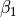

PyGran Tutorials¶
This tutorial follows the complete process of parametrising a new molecule within the MARTINI forcefield, covering aspects of mapping design, model generation and model validation.
PyCGTOOL is used at multiple stages, showing its use in several different situations.
All files required to follow this tutorial are present in the doc/tutorial_files directory.
The molecule chosen as a target for this parametrisation is the  antagonist atenolol.
Atomistic Simulation¶
The reference simulation for the parametrisation of atenolol was performed using the GROMOS 54A7 united atom forcefield with a topology from the ATB database.
A single molecule of atenolol was solvated and equilibrated, before collecting a 50 ns trajectory using the GROMACS molecular dynamics simulator.
A reduced copy of this trajectory is provided in the tutorial files (as ref.xtc, ref.gro contains the initial structure) since the original is prohibitively large.
Mapping Design¶
Designing a suitable mapping from the atomistic to the coarse-grained representation requires some experience and a degree of chemical intuition, but the ease with which the mapping may be modified using PyCGTOOL allows the mapping to be iterated much more quickly than if the construction of the CG model were to be performed manually.
The process of designing a mapping involves splitting the molecule into fragments, each of which contains approximately four heavy atoms. Start by finding functional groups such as amides or carboxylates, each of which may become a single bead. Next, replace phenyl rings with a triangle of three small type beads, each of which contains two heavy atoms and has reduced Lennard-Jones size and mass, as compared to the normal four-atom beads. Finally, divide any remaining parts of the molecule into beads of four heavy atoms as required. The ideal bead will contain four heavy atoms and be nearly spherical, but this is not always possible. If any atoms remain after clusters of four have been allocated, it may be required to use a mapping of three-to-one for some beads.
After the atoms have been allocated to beads, determine which beads should be bonded by inspection of the atomistic structure; bonds between functional groups in the atomistic structure become bonds between beads in the CG structure. It will probably be the case that there is no obviously best mapping and bond topology, which is not at this point a major issue as multiple mappings can be assessed easily.
Once the mapping and bond topology have been determined, they must be put into a format readable by PyCGTOOL. This format is as described in the introduction to PyCGTOOL. The mapping file must contain a molecule header which is the residue name enclosed in square brackets. Each subsequent line represents a single CG bead and is of the structure (where items in square brackets are optional):
<bead name> <MARTINI type> [<bead charge>] <component atom 1> [<component atom 2> ...]
The bonding file has a similar structure with a molecule header followed by lines defining each bond in the format:
<bead 1> <bead 2>
It is not necessary to define angles since PyCGTOOL is able to infer these from the bond network. If only a subset of the possible angles require parameters then they may be listed, preventing automatic enumeration of all possible angles.
The mapping used in the paper to describe atenolol (just one of the several possible mappings) is described by the following input files.
atenolol.map:
[36KB]
N1 P1 N1 C12 C13 C14
O1 P1 O3 C1 C2 C3
O2 SP3 O2 C4
C1 SC3 C5 C6
C2 SC3 C8 C9
C3 SC3 C7 C10
N2 P5 C11 O1 N2
atenolol.bnd:
[36KB]
N1 O1
O1 O2
O2 C1
O2 C2
C1 C2
C1 C3
C2 C3
C3 N2
Model Generation¶
The process of model generation after having created the mapping and bond definition files is automated by PyCGTOOL. In the simplest case, a parameter set may be generated simply by passing the four input files to PyCGTOOL:
pycgtool.py -g ref.gro -x ref.xtc -m atenolol.map -b atenolol.bnd
This will create two output files out.gro, the mapped CG coordinates, and out.itp, the calculated CG model parameters.
Running the CG Simulation¶
Note: These instructions assume the use of GROMACS 5.0 or newer.
From this stage the usual preparation of MARTINI/GROMACS simulations applies.
The output coordinates out.gro must be solvated using the GROMACS tool gmx solvate with the options:
gmx solvate -cp out.gro -cs ../../data/water.gro -o solv.gro -radius 0.21
Since MARTINI water cannot be automatically added to the .top file, this must be done manually.
A template file, template.top, is provided.
Copy this to topol.top and add the line “W 251” to the bottom, since 251 should be the number of water molecules added by gmx solvate.
The three stages of simulation: minimisation, equilibration, and production may then be run:
gmx grompp -f em.mdp -c solv.gro -p topol.top -o em.tpr
gmx mdrun -deffnm em
gmx grompp -f npt.mdp -c em.gro -p topol.top -o npt.tpr
gmx mdrun -deffnm npt -v
gmx grompp -f md.mdp -c em.gro -p topol.top -o md.tpr
gmx mdrun -deffnm md -v
These simulations should take a few minutes on a modern desktop.
Model Validation¶
It is recommended to perform validation before using a generated CG model for production simulations, so that we may have confidence in its ability to replicate the behaviour of the molecule being studied. The methods of validation applied in the PyCGTOOL paper are a comparison of the distribution of bonded term measurements between the CG test simulation and the atomistic reference simulation, and a comparison of the radius of gyration between these two simulations. Additionally, other methods of validation should be applied relevant to the class of molecule being studied; for instance, validation of membrane lipids should compare the membrane thickness and surface area per lipid to the atomistic reference.o
To compare the distribution of bonded terms, we must first rerun PyCGTOOL to generate samples of the bonded measurements. For the atomistic reference simulation, this can be done by running:
pycgtool.py -g ref.gro -x ref.xtc -m atenolol.map -b atenolol.bnd --advanced
In the menu, set the advanced option dump_measurements to True by selecting it with the arrow keys and toggling with the enter key.
Once this option has been set, continue by pressing the q key.
PyCGTOOL will now output a sample of each measured bond length and angle (but since the reference trajectory is short, the target sample size is not met and all values are collected), in the files 36KB_length.dat and 36KB_angle.dat.
Since we will be collecting samples of the same measurements from the CG simulation, these files should be renamed to, for instance, ref_length.dat and ref_angle.dat. Collect the same samples for the CG simulation using:
pycgtool.py -g md.gro -x md.xtc -b atenolol.bnd
Since we provide a bond file, but not a mapping file, PyCGTOOL will know that this is intended to simply collect bond measurements and will automatically set the dump_measurements option to True.
Again, the files created will be called 36KB_length.dat and 36KB_angle.dat.
These samples were compared in the paper using an R script to generate a series of boxplots, but a simpler Python script is provided which may be used to compare the mean and standard deviations of the samples:
./average_columns.py ref_length.dat 36KB_length.dat
./average_columns.py ref_angle.dat 36KB_angle.dat
If the automatically generated parameters provide an accurate representation of the reference structure, the percentage error between the two samples will be small.
Validation of the more general molecular conformation may be performed by comparison of the radius of gyration of the reference and CG models. This may be performed using the standard GROMACS too gmx gyrate:
gmx gyrate -f ref.xtc -s ref-for-rgyr.tpr -o ref-gyr.xvg
gmx gyrate -f md.xtc -s md.tpr -o cg-gyr.xvg
In both cases select the 36KB group as the one on which to perform the calculation. These commands will calculate the radius of gyration for each trajectory frame for both the reference and CG simulations. The resulting .xvg files may be visualised using a graphing program such as xmgrace or compared in the same way as the bonded samples, using:
./average_columns.py ref-gyr.xvg cg-gyr.xvg
As before, a small percentage difference in each of the columns suggests good replication of gross conformation.
In addition to these simple forms of validation, it is recommended that further validation, relevant to the class of molecule, is performed. In the case of membane lipids, for instance, this may take the form of an assessment of membrane thickness and surface area per lipid.